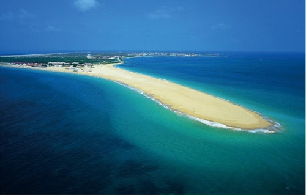

澎湖吉貝嶼(沙尾)
Penghu Jibei yu(Shawei)
地址：884澎湖縣白沙鄉吉貝嶼
吉貝嶼位於白沙島北方約5.5公里，為澎湖北海最大的島嶼，四周有石滬群和珊瑚礁地形，島內更有豐富的人文景觀與文化遺址。東南海岸的岩層已被侵蝕成為海蝕平臺。島的東側及東北側海濱，有較黝黑的玄武岩。西崁山原為一獨立山頭，後來由於廣大的珊瑚碎屑堆積而成一座陸連島，在西崁山東南方有一隆起的灘岩地形，與西崁山北方的堆積層，約合佔全島的二分之一面積，是本島另一特別的地形景觀。
由於地理位置特殊，本島的鳥類和植物也十分豐富，目前發現的鳥類已有百餘種。堆積層外面的海蝕平臺上，石滬櫛比鱗次，退潮後露出海面，是澎湖石滬最密集的地方。
更多介紹：